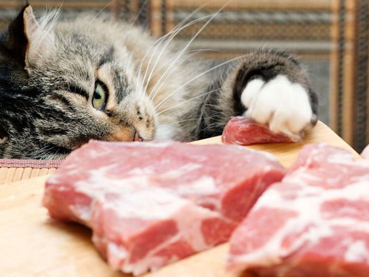

Ihr Lebensraum
 Hauskatzen stammen von afrikanischen Wildkatzen ab, aber ihr natürlicher Lebensraum ist aufgrund ihrer Verbreitung auf der ganzen Welt als Haustiere viel vielfältiger geworden. Ihre wilden Vorfahren, wie die afrikanische Wildkatze (Felis silvestris lybica), stammen aus dem subsaharischen Afrika und dem Nahen Osten. Diese Wildkatzen bevorzugen verschiedene Lebensräume wie Savannen, Steppen, offene Wälder und felsige Gebiete, wo sie Beute finden und sich vor Bedrohungen verstecken können. Sie sind geschickte Jäger und haben ihre Jagdgewohnheiten und ihr Verhalten an die Umgebung, in der sie leben, angepasst.
Hauskatzen stammen von afrikanischen Wildkatzen ab, aber ihr natürlicher Lebensraum ist aufgrund ihrer Verbreitung auf der ganzen Welt als Haustiere viel vielfältiger geworden. Ihre wilden Vorfahren, wie die afrikanische Wildkatze (Felis silvestris lybica), stammen aus dem subsaharischen Afrika und dem Nahen Osten. Diese Wildkatzen bevorzugen verschiedene Lebensräume wie Savannen, Steppen, offene Wälder und felsige Gebiete, wo sie Beute finden und sich vor Bedrohungen verstecken können. Sie sind geschickte Jäger und haben ihre Jagdgewohnheiten und ihr Verhalten an die Umgebung, in der sie leben, angepasst.
Körperliche Merkmale
 Katzen zeichnen sich durch schlanke, muskulöse Körper, proportional große Köpfe mit relativ kurzen Schnauzen, große runde Augen, bewegliche Ohren und retraktile Krallen an den Pfoten aus. Ihr Fell kann in Länge, Farbe und Muster erheblich variieren, und sie können eine breite Palette von Augenfarben haben. Diese körperlichen Merkmale machen sie geeignet für die Jagd, das Klettern und das Leben sowohl drinnen als auch draußen.
Katzen zeichnen sich durch schlanke, muskulöse Körper, proportional große Köpfe mit relativ kurzen Schnauzen, große runde Augen, bewegliche Ohren und retraktile Krallen an den Pfoten aus. Ihr Fell kann in Länge, Farbe und Muster erheblich variieren, und sie können eine breite Palette von Augenfarben haben. Diese körperlichen Merkmale machen sie geeignet für die Jagd, das Klettern und das Leben sowohl drinnen als auch draußen.
Soziales Verhalten

Katzen zeigen ein komplexes soziales Verhalten, obwohl sie im Allgemeinen als eigenständige Tiere betrachtet werden. Einige Schlüsselpunkte sind: Territorialität: Katzen sind territorial und markieren ihr Revier mit Geruchssignalen. Kommunikation: Sie nutzen eine Vielzahl von Signalen, einschließlich Miauen, Fauchen und Körpersprache. Fellpflege: Sie widmen sich der täglichen Fellpflege, sowohl um sauber zu bleiben als auch um soziale Bindungen zu stärken. Soziales Spiel: Sie können miteinander oder mit Menschen spielen und dabei Vertrauen und Zuneigung zeigen. Soziale Hierarchie: In Katzengruppen können soziale Hierarchien entstehen, wenn auch fließend. Bindungen zu Menschen: Hauskatzen können starke emotionale Bindungen zu ihren menschlichen Besitzern entwickeln und suchen körperlichen Kontakt und Interaktion. Zusammenfassend lässt sich sagen, dass Katzen ein reiches und vielfältiges soziales Verhalten sowohl mit anderen Katzen als auch mit Menschen zeigen können, wobei sie jedoch ihre Unabhängigkeit als integralen Bestandteil ihrer Natur bewahren.
Was essen sie?
Katzen sind obligate Fleischfresser, was bedeutet, dass ihre natürliche Ernährung hauptsächlich aus Fleisch besteht. Zu den Lebensmitteln, die Katzen essen, gehören: Fleisch: Frisches oder rohes Fleisch ist ein wesentlicher Bestandteil der Katzenernährung. Sie können Rind-, Hühner-, Truthahn-, Lamm- und andere Fleischsorten essen. Fisch: Einige Katzen mögen Fisch, der eine Quelle für Proteine und Omega-3-Fettsäuren sein kann. Allerdings sollte Fisch nicht den Großteil ihrer Ernährung ausmachen, da das Risiko einer Quecksilbervergiftung und ernährungsbedingter Ungleichgewichte besteht. Handelsübliche Katzenfutter: Es gibt trockene und feuchte Lebensmittel, die speziell auf die Ernährungsbedürfnisse von Katzen zugeschnitten sind. Diese Lebensmittel können Fleisch, Fisch, Vitamine, Mineralien und andere essentielle Nährstoffe enthalten. Hausgemachte Ernährung: Einige Besitzer entscheiden sich dafür, das Futter ihrer Katzen zu Hause zuzubereiten, um sicherzustellen, dass eine angemessene Menge an Proteinen, Fetten, Kohlenhydraten, Vitaminen und Mineralstoffen enthalten ist. Es ist wichtig zu beachten, dass Katzen spezifische Ernährungsbedürfnisse haben und ohne eine ausgewogene Ernährung nicht lange überleben können. Es ist immer ratsam, einen Tierarzt zu konsultieren, um die beste Ernährung für Ihre Katze zu bestimmen und sicherzustellen, dass sie alle benötigten Nährstoffe erhält.